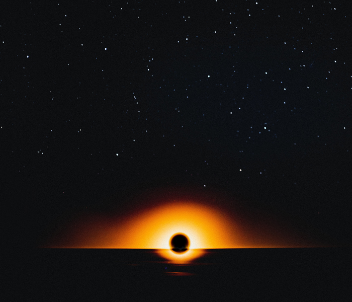
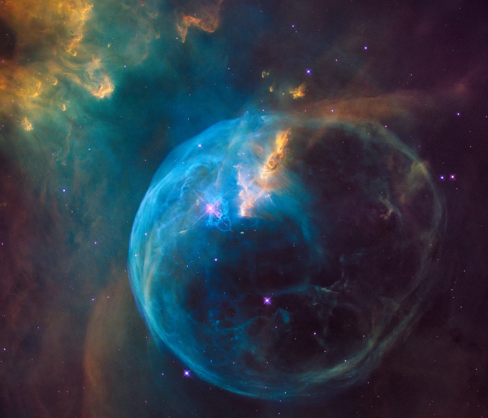

The question so many of us ask ourselves is: Why are we going to Mars?
If we look back in Earth’s history we find something interesting and existentially frightening:
Around every 100millionth year, give or take, a mass extinction event kills 65-96% of all life on Earth!
Photo: Louis Maniquet
The most recent example of this is the one we all know: the extinction of the dinosaurs.
The dinosaurs inhabited earth for about 165 million years until a giant meteor hit and 75% of all species were lost.
That extinction happened 65 million years ago.
So, what is it we need to save ourselves from? What could cause humanity’s extinction?
Paint illustrating a Supernova. Photo: Joel Filipe.
Supernova
When a giant star dies, an enormous explosion can occur.
An explosion like that is called a Supernova and if it happened within 30 light-years of us, it would be the end of humanity.
An asteroid in the night sky. Photo: Kristopher Roller.
Asteroids
Asteroids pass Earth all the time. They can be as small as a plum, or as wide as Norway, from Trysil to Stad. Being hit by even a small 50m asteroid would be catastrophic, so astronomers are watching closely.
Check out our overview of the Asteroids that are closest to Earth right now.

Solar Eclipse looks like black hole. Photo: Jacob Granneman.
Black Hole
If a black hole passed only a billion miles from Earth, it could affect our orbit so drastically that the temperatures on Earth would make it inhabitable.
If it passed any closer… You guessed it!
The Northern Light is caused by sun flares. Photo: Johny Goerend.
Solar Superflare
You know the beautiful Northern Light? That’s caused by solar flares.
A superflare is millions of times more powerful than that. If our Sun super-flared, it could cause dramatic damage to our civilisation, possibly making humanity extinct.

The Bubble Nebula: A star inside a gas bubble. Photo: NASA.
Gamma-Ray Burst
When some special, massive stars collapse, a thin ray of energy can explode out in two opposite directions, releasing more energy than our Sun releases in 10 billion years.
If this happens in our galaxy and the burst hits us, we’re done.
A helmet in the sand. Photo: Elia Pellegrini.
Hard To Grasp
All of these high-stake hypothetical dangers may be hard to grasp - or to take seriously -, and you and I will probably not live to experience a mass extinction event.
Still, if humanity stays on Earth, eventually an event like this will make us extinct. Some people are working on how to save humanity when a mass extinction eventually occurs.
One of these people is Elon Musk. He believes that by spreading to other planets, humankind will have a bigger chance of surviving into the future.
(If you're interested in a long read about SpaceX' Mars Mission, check out Wait But Why's amazing article series How (and Why) SpaceX Will Colonize Mars.)
When are we going to Mars?
Asteroids close to Earth today.
Starting a New Life on Mars.